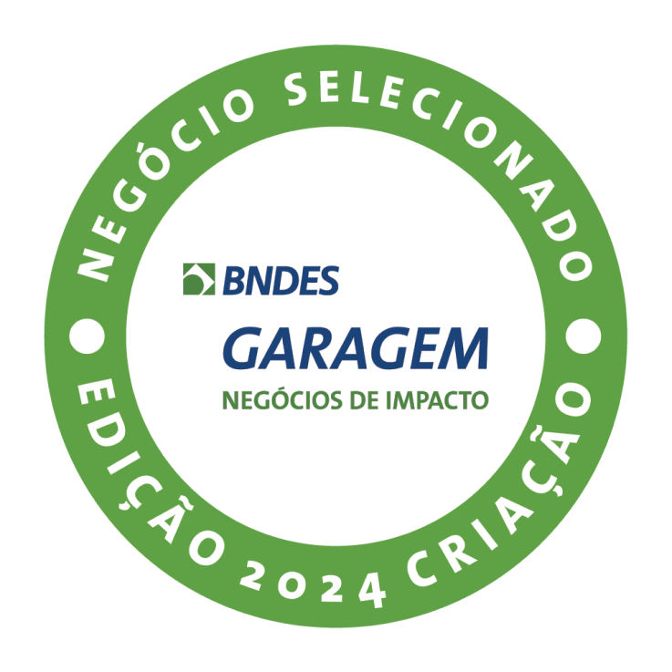

Instalação do Protótipo no Espaço Ciência

60 dias após vencermos a maratona de programação Hacker Cidadão 11.0, promovida pela Prefeitura do Recife, fizemos a instalação do nosso MVP no museu interativo de Ciência e Tecnologia, Espaço Ciência.
Parceria com o laboratório LIMCS

Durante o desenvolvimento do protótipo, a startup contou com o acompanhamento direto do LIMCS (Laboratório de Inovação para Mudanças Climáticas e Sustentabilidade), vinculado ao Instituto Humanitas Unicap, e da Defesa Civil do Recife. Na 11ª Semana Socioambiental da Unicap, foi agraciada com o Prêmio LIMCS de Inovação Socioambiental.
Vencedores da Maratona de Negócios do SEBRAE

Na Campus Party Nordeste, a startup teve a oportunidade de participar da maratona de negócios do SEBRAE, onde passou por três dias de imersão com acesso a palestras, workshops e mentorias. Com mais de 250 inscrições, a 'Ih, Alagou' conquistou o 1º lugar após o Demoday.
Participação no BNDES Garagem

O 'Ih, Alagou' foi selecionado para o programa BNDES Garagem, uma iniciativa que fomenta startups com soluções inovadoras para desafios sociais e ambientais. Durante o programa, nossa equipe recebeu mentorias especializadas, acesso a redes de contato e suporte para o desenvolvimento do negócio, reafirmando nosso compromisso com a resiliência climática e o impacto social.